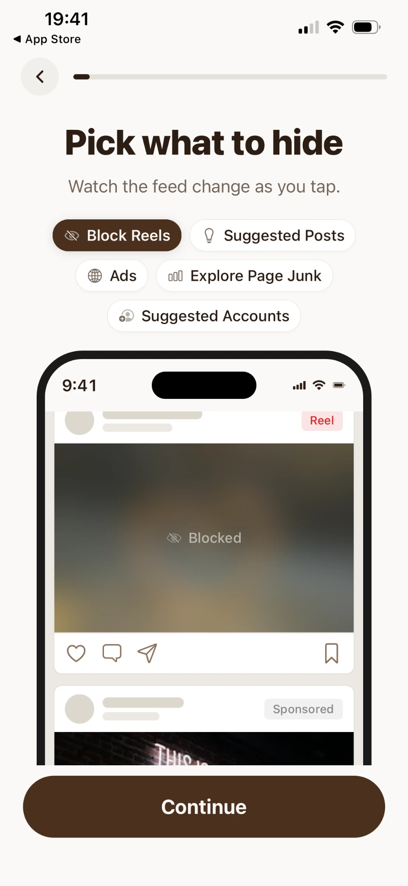
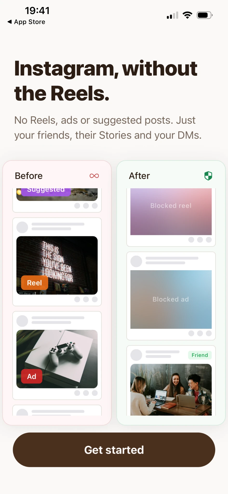
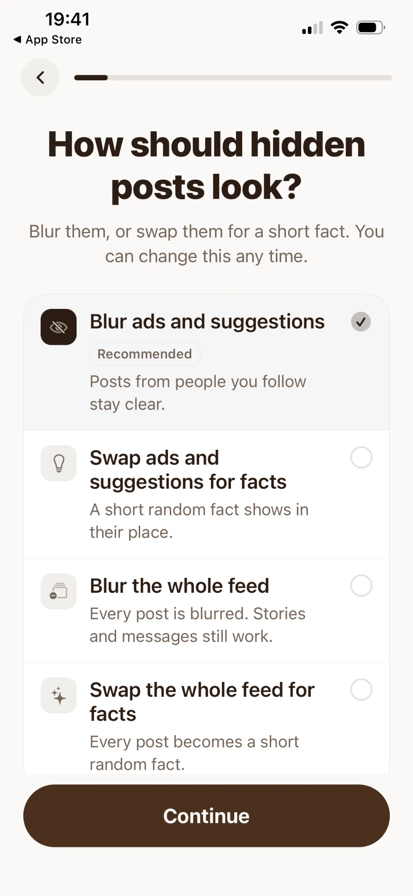
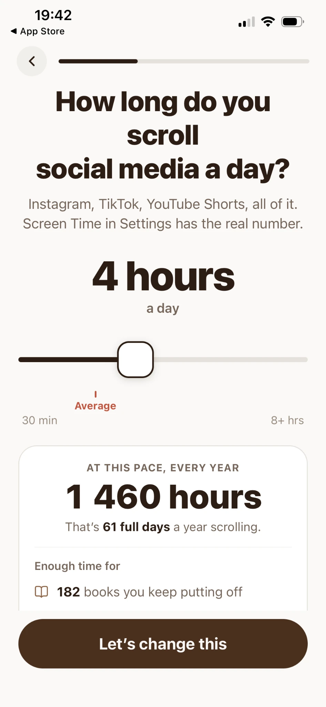
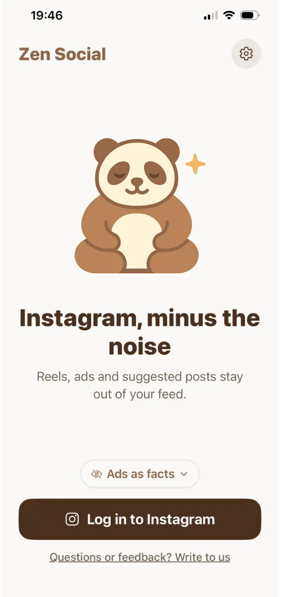

Приходит сообщение
Действие Открывает Instagram, чтобы ответить другу.
Боль Пока нет.
UX-возможность Быстрый доступ к Direct.
ZenSocial помогает скрыть Reels и рекомендации, размыть рекламу, сохранив то, зачем мы действительно заходим в Instagram.


В Instagram приходят по делу: ответить друзьям, посмотреть Stories, узнать новости близких. Но интерфейс легко переводит внимание в Reels и бесконечные рекомендации.
Как помочь человеку меньше скроллить, не лишая его общения и нужного контента?
Проектирование сценариев, интерфейс и визуальная система приложения. Позже — отдельный UX-аудит и предложение по переработке онбординга.
В основе UX-анализа — аналитическая персона, CJM текущего опыта и продуктовые гипотезы. Это модели для проектирования, а не вымышленные результаты интервью.
Работает в digital. Регулярно пользуется Instagram, чтобы общаться с друзьями и смотреть Stories.
Отвечать на сообщения, смотреть истории друзей и не пропускать важное.
Переход к Reels происходит почти автоматически. Запланированное действие теряется.
Лимит экранного времени ограничивает и полезные функции Instagram.
Самостоятельно скрывать отвлекающий контент и менять настройки позже.
Когда я захожу в Instagram ради сообщений или Stories, я хочу не отвлекаться на рекомендации, чтобы сделать задуманное и вернуться к своим делам.
Показываем, в какой момент теряется изначальная цель пользователя и где продукт может помочь.
Действие Открывает Instagram, чтобы ответить другу.
Боль Пока нет.
UX-возможность Быстрый доступ к Direct.
Действие После ответа видит интересную публикацию.
Боль Цель смещается.
UX-возможность Убрать точки входа в отвлекающий контент.
Действие Смотрит видео одно за другим.
Боль Нет естественной точки остановки.
UX-возможность Скрывать Reels.
Действие Замечает, что прошло гораздо больше минут.
Боль Раздражение, чувство потери контроля.
UX-возможность Упростить завершение нужного действия.
Действие Пробует ограничить время Instagram.
Боль Лимиты мешают также сообщениям и Stories.
UX-возможность Ограничивать функции отдельно.
Действие Хочет оставить общение, но убрать Reels.
Боль Неясно, можно ли фильтровать безопасно.
UX-возможность Прозрачно объяснить принцип работы.
Три гипотезы, которые направляют UX-решения. Их эффективность ещё предстоит проверить на реальных пользователях.
Если скрывать Reels и рекомендации, но оставлять Direct и Stories, пользователь сможет выполнять нужные действия с меньшим количеством отвлечений.
Если убрать необязательные шаги до первого запуска, пользователю будет проще понять пользу приложения и начать им пользоваться.
Если заранее объяснять, какие элементы будут скрыты, и давать возможность изменить выбор, настройки станут понятнее.
Не просто UI-экраны. Каждое решение связано с конкретным пользовательским затруднением.
Вместо полного запрета Instagram пользователь выбирает отдельные категории контента. Превью помогает увидеть результат выбора ещё до входа в аккаунт.
Можно скрыть отвлекающий контент размытием или заменить короткими фактами. Основной вариант выбран по умолчанию; дополнительные настройки не обязательны.
Пользователь может пропустить этот шаг и изменить отображение позже.

Тёплые нейтральные оттенки, контрастная типографика, крупные зоны нажатия и понятные состояния выбора.

02 / TIME AWARENESS
03 / LOGIN TO INSTAGRAMВ процессе разработки онбординг был расширен до 15 экранов без моего участия в проектировании этого сценария. Я провела UX-аудит и подготовила более короткую версию.
Цель — уменьшить путь до первой ценности, не потеряв объяснение продукта и мотивацию пользователя.
Реальные экраны из исходного PDF. Нажми на любой для увеличения.
У каждого экрана теперь своя роль: познакомить с продуктом, показать масштаб скроллинга, дать настроить фильтры и подтвердить выбор.
Это дизайн-предложение. Влияние на конверсию, активацию и удержание ещё не измерено.ZenSocial опубликован. Отдельная UX-итерация онбординга подготовлена для дальнейшей проверки и разработки.
После онбординга пользователь подключает Instagram и применяет выбранные ограничения.
Добавить настоящий скриншот после входа в Instagram: скрытые Reels и рекомендации.
Добавить экран, который показывает, как пользователь может изменить фильтрацию позднее.
В кейсе показаны созданные интерфейсы и самостоятельная работа по анализу и улучшению одного из ключевых сценариев. Далее — пользовательская проверка обновлённого онбординга.